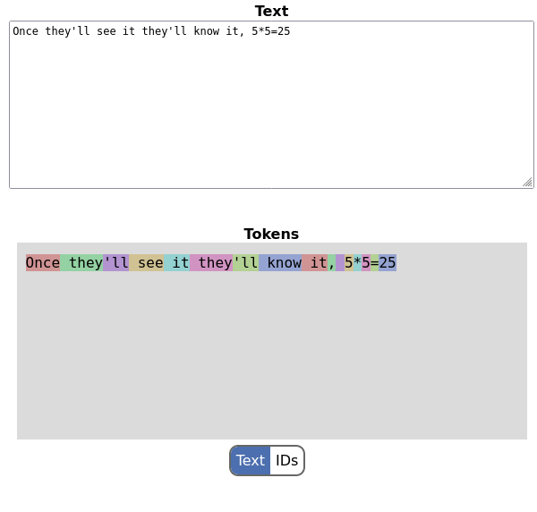

A basic unit of currency in modern LLMs is the token; exciting new models have long context windows of millions of tokens. API pricing for the large providers is per-token. We're even seeing the invention of new, derived units like TPM (tokens per minute).
But what are tokens?
This OpenAI help article tells us that tokens are pieces of words, and gives some useful rules of thumb like a token being equivalent to approximately 4 characters or 3/4 of a word for the English language.
In this post I want to review the most commonly used algorithm for splitting text into tokens, provide a complete implementation in Go, and show a playground for experimenting with it. While my implementation isn't tuned for speed, it aims to be complete, readable and compatible with OpenAI's tiktoken library, generating identical results and working with the same vocabulary files.
Byte pair encoding - introduction
Byte pair encoding (BPE) is an algorithm originally designed for data compression. A 2016 paper suggested re-purposing it for "word segmentation" for machine learning tasks. The colloquial term for word segmentation is tokenization.
- Input: arbitrary text with words, numbers, whitespace and punctuation.
- Output: list of tokens representing the same text. Each token is an integer identifier which can be looked up in a vocabulary to reproduce the input text [1].
The BPE algorithm has an important pre-processing step: splitting the input text into words. The splitting is customizable and different models / vocabularies use different regexps for splitting (more on this later). The main idea is some sort of whitespace-based splitting (though whitespace itself is preserved) because we typically don't want inter-word tokens [2].
We'll be using this line from a catchy 1990s song as an example:
i'm blue dabadee dabadam
A word splitter will produce something like the following list, where spaces are replaced by underscores _ for the sake of presentation (they remain as spaces in the actual implementation of the algorithm and its trained vocabulary):
i
'm
_blue
_dabadee
_dabadam
A few things to note:
- The contraction 'm is split from i - this is common for English language splitters, which want things like 'm, 'll, 're as separate words.
- Whitespace is preserved and attached at the start of a word. Whitespace is important because tokens at the beginning of words sometimes have different semantic meaning from tokens not at the beginning of words. The choice of where it's attached is arbitrary. From this point on, whitespace bytes are considered like any other bytes in the BPE algorithm.
Now is a good time for some terminology we'll be using while talking about BPE:
- Word: produced by the splitter in pre-processing, like the list shown above.
- Token: typically a sub-word sequence of bytes; the output of the tokenizer is a list of tokens, by ID.
- Token ID: unique numerical identifier for a token.
- Vocabulary: a mapping of token IDs --> token values learned by the tokenizer during the training process.
- Training: the process in which BPE learns a vocabulary from a corpus of text.
- Splitter regexp: regular expression used to split text into words during pre-processing. Given an algorithm (in this case BPE), the pair vocabulary + splitter regexp unambiguously defines how a given text will be tokenized.
- Encoder: given a vocabulary and a splitter regexp, tokenizes any text into a list of IDs from the vocabulary.
- Decoder: given a list of IDs and the vocabulary, reconstructs the original text.
Training
BPE training proceeds by first assuming each byte is its own token, and then successively merging pairs of tokens into longer tokens and adding these to the vocabulary, until the desired vocabulary size is achieved.
Let's reuse our example, starting with these words:
i
'm
_blue
_dabadee
_dabadam
The BPE process starts by creating a token for each byte in the inclusive range [0..255]. So the minimal vocabulary size is 256; this guarantees that from the very start, there's a valid encoded representation of any text.
Then, the following process is repeated:
- Count how many times each ordered pair of bytes appears in the input. Ordered pair here means two bytes right next to each other. In our example, some such pairs are "bl", "da", "de", "ee" etc.
- Find the pair with the highest count, and create a new token from it (create a new token ID, mapping it to the concatenation of the most common pair).
- Replace this most common pair with the combined token in the input set.
In our example, we start by splitting input words to bytes, so it's a list of single-byte token lists. This is our working list:
[i]
[' m]
[_ b l u e]
[_ d a b a d e e]
[_ d a b a d a m]
Next, we count the frequency of appearance of each ordered pair:
[d a] --> 3
[a b] --> 2
[b a] --> 2
[' m] --> 1
[_ b] --> 1
[l u] --> 1
[u e] --> 1
[_ d] --> 2
[a d] --> 2
[d e] --> 1
[e e] --> 1
[b l] --> 1
[a m] --> 1
The pair "da" is the most common one, so we're creating a new token for it, and substituting it everywhere in the working list:
[i]
[' m]
[_ b l u e]
[_ da b a d e e]
[_ da b a da m]
As you can see, in every instance "d" followed by "a" was combined into "da". Now repeat the process; finding the most common pairs in this new working list:
[e e] --> 1
[a da] --> 1
[l u] --> 1
[_ da] --> 2
[da b] --> 2
[a d] --> 1
[d e] --> 1
[da m] --> 1
[' m] --> 1
[_ b] --> 1
[b l] --> 1
[u e] --> 1
[b a] --> 2
Several pairs have a count of 2, so we pick one arbitrarily. Let's say it's _da (a space followed by "da"). We add _da as a new token and make replacements in the working list:
[i]
[' m]
[_ b l u e]
[_da b a d e e]
[_da b a da m]
And so on. When does this process stop? When we either run out of pairs (every word consists of a single token) or - more realistically for an actual training corpus - when we reach our desired vocabulary size. For example the vocabulary used for GPT-4 has around 100,000 tokens (more on this later).
The output of the training process is a vocabulary; let's say we've only run two cycles on our input text as described. The vocabulary will have 258 tokens in it: 256 for the single bytes, one for da and another for _da. Each of these would have a unique integer ID.
In our Go sample code, the training is implemented in this file. You can set the debugTrain variable to true to follow the process on some sample text.
Encoding
Having learned a vocabulary, the process of encoding is what happens every time we feed text into an LLM and it needs to be tokenized. The input is arbitrary text, a splitting regexp and a vocabulary. For example, let's take the input text "yada daba". Splitting is performed as before, and the input is broken into individual bytes:
[y a d a]
[_ d a b a]
BPE encoding takes the vocabulary and tries to apply learned tokens to the input text, word by word. The process is greedy - tokens are applied in the same order they've been learned (this is easy to accomplish by assigning monotonically increasing integer IDs to new tokens in the vocabulary, and then prioritizing lower-numbered tokens for encoding).
The first token we learned was da, so let's apply that:
[y a da]
[_ da b a]
The next token we learned was _da:
[y a da]
[_da b a]
This is the final stage; there are no more learned tokens to apply. The result will consist of 6 tokens.
In our sample code, the encoder is in this file.
Realistic vocabulary and splitting
The examples shown so far have been toys, but the algorithms are real and work with the actual vocabularies and splitters used in modern models. As a case study, the tokenizer used for OpenAI's GPT-4 uses a vocabulary called cl100k_base, which contains 100k tokens in addition to the 256 byte-sized ones. This is also the vocabulary (encoding) the tiktoken library uses. It can be freely downloaded from OpenAI - a copy is available in my sample repository. The file is base64 encoded, which is easy to unravel and we'll see tokens like:
" Fritz" 91083
"Initially" 91084
"nodeValue" 91085
"_TRIANGLES" 91086
"-backend" 91087
The token string value is to the left, and the numerical token ID is to the right. As you can see, the algorithm is not particularly discerning about what it learns - names, pieces of code - whatever works!
The other important data needed to reproduce OpenAI's tokenization is the splitting regexp, which is this:
(?i:'s|'t|'re|'ve|'m|'ll|'d)|[^\r\n\p{L}\p{N}]?\p{L}+|\p{N}{1,3}| ?[^\s\p{L}\p{N}]+[\r\n]*|\s*[\r\n]+|\s+(?!\S)|\s+
It's just a combination of several alternatives. You could use one of the many "regexp explainer" websites out there to study it, or ask a modern LLM, but the gist of it is: this regexp splits space-delimited words, leaving spaces in front of the words, with some special provisions like English contractions (being separate words) and long numbers being split to groups of 3. For Go programmers, it's important to note that this pattern uses ?! - negative lookahead - which the standard regexp package doesn't support. Therefore, we'll have to reach for the 3rd party regexp2 to implement this [3].
In our sample repository, take a look at this test that ties everything together - it loads the cl100k_base encoding and uses it alongside the splitting regexp to tokenize some real text.
Full online demo with a web UI and WebAssembly
My goal with this project wasn't only to understand the BPE algorithm, but to also try reproducing the actual tokenizer used by OpenAI for its most modern models. And this goal was accomplished!
OpenAI has a nice website here that lets you enter text and see how it's tokenized. I've managed to reproduce this UI - see the cmd/wasm directory in the repository. I've also placed it online - it can ran in your browser from here. Here's a screenshot [4]:
How it works: the Go implementation of BPE is compiled to a WebAssembly binary that's loaded from a bit of glue JavaScript embedded in a simple HTML page. The JavaScript watches the text box as you type and sends the string to a Go function exported from the WASM, which tokenizes it on the fly. So we get a nice effect of "tokens updated as we type". The selection button at the bottom also lets us see the numerical IDs for these tokens - they should be equivalent to what tiktoken is producing.
| [1] | For simplicity, this post will focus on English. As you'll see, however, the BPE algorithm is language-agnostic. |
| [2] | There's also a performance implication: if we make tokenization word-oriented, we can easily implement streaming tokenization without depending on previous words. |
| [3] | I think it would be possible - with a bit of effort - to work around this limitation and stick to the standard library, but just using regexp2 is simpler, and it's also what tiktoken-go is doing. |
| [4] | You'll notice that in this example every word (except contractions) is a separate token; this shouldn't be surprising, since these are all very common words and the vocabulary is large! Try playing with it a bit though, giving it longer words (like "discombobulated") or non-trivial variable names from a programming language. |